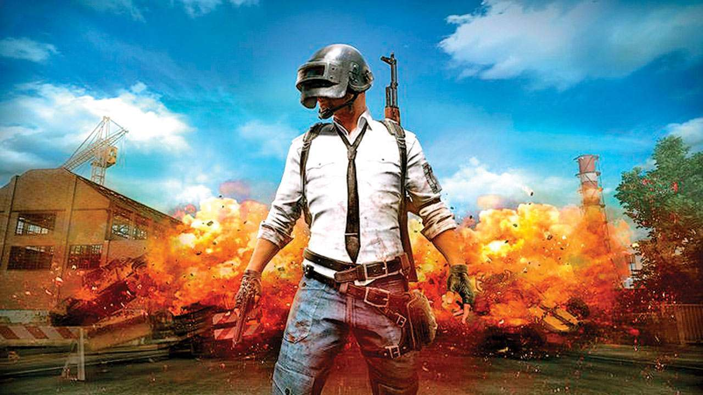

PUBG MOBİLE AYRINTILARA HOŞGELDİNİZ
PlayerUnknown's Battlegrounds ya da bilinen adıyla PUBG, Bluehole tarafından yayımlanan ve geliştirilmekte olan çok oyunculu bir video oyunudur. Oyunda 100'e yakın (en fazla 100) oyuncu rotası belirlenmiş bir uçağın içinde oyuna başlarlar. İstedikleri zaman uçaktan atlarlar ve paraşütleriyle adanın herhangi bir konumuna inerler. Oyuncuların temel amacı çeşitli yerlerden buldukları çeşitli silahlarla diğer oyuncuları öldürüp ölmeden en sona kalan oyuncu olmaktır. Oyun esnasında adanın haritasındaki güvenli alan gittikçe küçülmeye başlar. Harita küçüldükçe oyuncular daha küçük bir alana yoğunlaşırlar ve birbirlerini görüp saf dışı bırakmaları ihtimâli kolaylaşır. Oyunda en son hayatta kalan oyuncu/takım oyunu kazanır. Oyuncular, PUBG ve PUBG Mobil oyunlarında ustalaşıp zirveye erişebilmek için pek çok yöntem deneyerek kıyasıya mücadele ediyor. Bu sıradışı ve sıcak çatışma alanının dışındayken de tüm oyuncular, PUBG mobile ile ilgili internette araştırma yaparak, hileleri ve oyunla ilgili ipuçlarını öğrenmeye çalışıyor. PUBG'nin mobil sürümüyle ilgili öğrenilmesi gereken şeyler, yalnızca oyunda nasıl hareket edilmesi değil, aksine oyunu en verimli hangi şekilde ve nasıl oynayabileceğiniz. Bu nedenle, oyunu çıkartan Tencent isimli şirket, gerek oyun deneyimini iyileştirmek, gerekse de ürün çeşitliliğini artırabilmek için oyunculara pek çok seçenek sunuyor. Öncelikle bunlardan bahsedelim.
ESPOR HAKKINDA
Ülkemizde üç büyüklerin League of Legends sahnesine resmen girişiyle birlikte, hali hazırda büyümesini sürdüren espor Türkiye’de de daha büyük bir kesimin ilgisini çekmeye başladı. 5Mid olarak 2014’ten beri bu sahneyi elimizden geldiğince tüm ayrıntılarına kadar espor takipçilerine aktarmaya çalışsak da, Fenerbahçe ve Galatasaray’ın 2017 itibariyle Türkiye Şampiyonluk Ligi’ne girişi, oyunların bu yönüyle daha önce karşılaşmamış birçok insanı espor ile tanıştırdı. Biz de son dönemde sayısı her geçen gün artan yeni ziyaretçilerimize bu farklı dünyayı anlatmak istedik.
Uzun ismiyle elektronik sporlar, kısa ismiyle ise espor, 2000’li yılların başları itibariyle ödüllü turnuvaların ivme kazanmasıyla varlığını hissettiren ve oyuncuların, profesyonel takımlar bünyesinde resmi lig ve etkinliklerde oyun oynayarak hayatlarını kazandığı bir spor dalıdır. Ülkemizde Gençlik ve Spor Bakanlığı – Spor Genel Müdürlüğü tarafından esporcu lisansı verilmekte, oyun oynayarak geçimini sağlayan kişiler profesyonel oyuncu olarak değerlendirilmektedir. Esporda başlangıç yaşı 13-14 dolaylarında kabul edilirken, oyuncular çoğu zaman 30 yaşına gelmeden sektörden emekliye ayrılır. Espor alanında en popüler oyunlar League of Legends, Dota 2, Counter Strike: Global Offensive, Overwatch ve Hearthstone olarak sıralanabilir.
